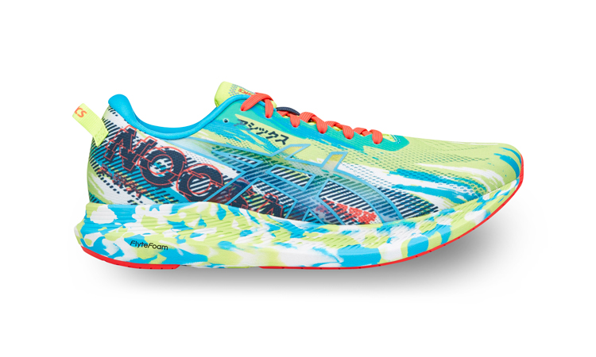

5 BEST RUNNING SHOES OF 2021
ADIDAS ULTRABOOST 21

The adidas Ultraboost 21 is a hot-seller on the market, and for good reasons. It gets the combination of breathability and flexibility just right. The Primeknit material is only 1.9mm thick and fits the foot like sock. Thereby, you gain extra flexibility when making runs. You also experience remarkable lift-off due to the LEP Torsion System. Although there is no heel counter, the heel still stays put due the rigid thick (4mm) external plastic cup construction. Grip is no problem at all due the Continental Rubber outsole.
ASICS GEL-KAYANO 27

Asics GEL Kayano 27 is going strong even years after its introduction in 1993. A combination of excellent fit and top-notch performance, Kayano 27 is a hardcore runner’s shoe. Featuring an engineered mesh upper that fits quite well around the foot. The midsole is a cushioning master. The Dynamic DuoMax support system coupled with GEL cushioning, Flytefoam Lyte and Propel tech delivers immense cushioning with every footstrike. Energy-return is handled efficiently by the Trusstic system, a hard-plastic plate on the base of the outsole. The MetaClutch exoskeleton heel systemholds your heel in place when the pacing gets faster. AHAR (ASICS High Abrasion Rubber) is a special long-lasting rubber with enhanced durability.
NIKE AIR ZOOM PEGASUS 37
The most significant part of the Pegasus 37 is the 37 itself. Nike is known for innovation and pushing boundaries. With the Pegasus their breakthrough came when the introduced the React foam along with the Zoom Air in the midsole. Responsive cushioning became it’s USP and has since boosted its popularity. Made for narrow feet, the streamlined shape and form-fitting mesh upper delivers breathability and a good fit. The zoned rubber outsole allows remarkable traction on most surfaces.
ASICS GEL-NOOSA 13
Built for tri-athletes, The GEL-NOOSA TRI™ 13 has received a lot of applause from seasoned runners. Besides the fact that it is easy to slide on-off easily, The GEL-NOOSA TRI™ 13 makes running an absolute joy. Russel mesh material is breathable and lightweight, combined with the marvelous graphics that’ll have people marveling at you. GUIDESOLE™ technology lessens the overall effort required so you can keep pushing your limits. ASICS Flytefoam™ cushioning technology coupled with GEL technology on the Super AHARPLUS™ outsole give the traction and energy-return to keep you going the extra mile.
NEW BALANCE 1080

New Balance 1080 is on the runner’s radar for many good reasons. Best described as breathable and durable, 1080 seems a little unconventional in the first look. The Hypoknit upper is able to withstand kms after kms of runs but still retain its snug fit while staying plush on your feet. Fresh Foam X provides a responsive and somewhat firm cushioning. But it does give you a stable ride with high mileage. The outsole with it’s curved shaped though needs a little getting used to, it does improve toe lift-off for easy running strides.
Categories
Recent posts